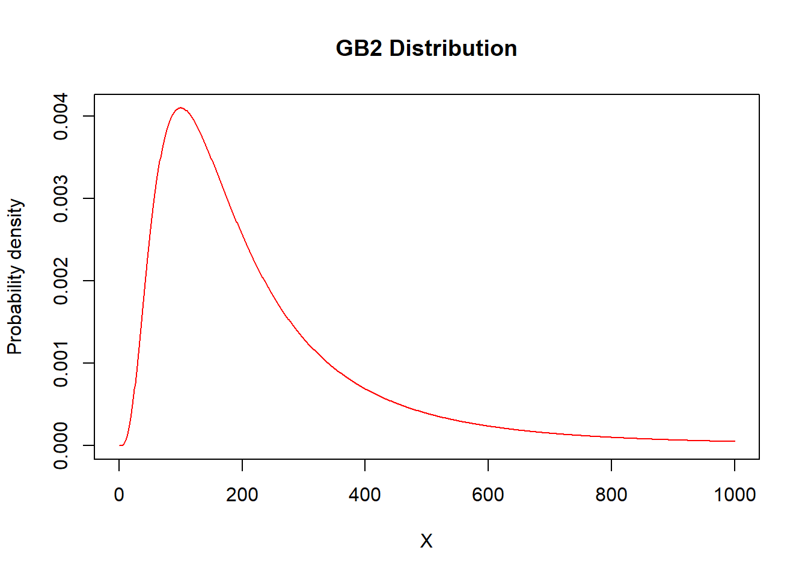
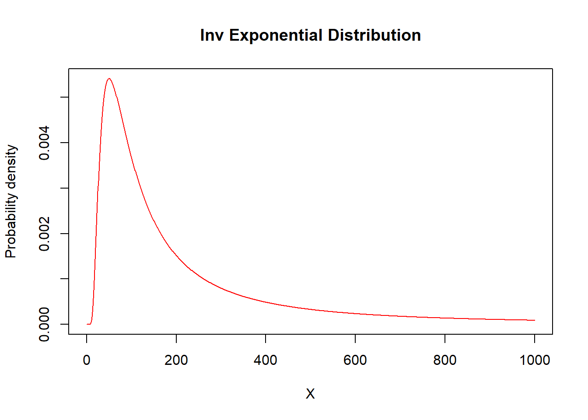
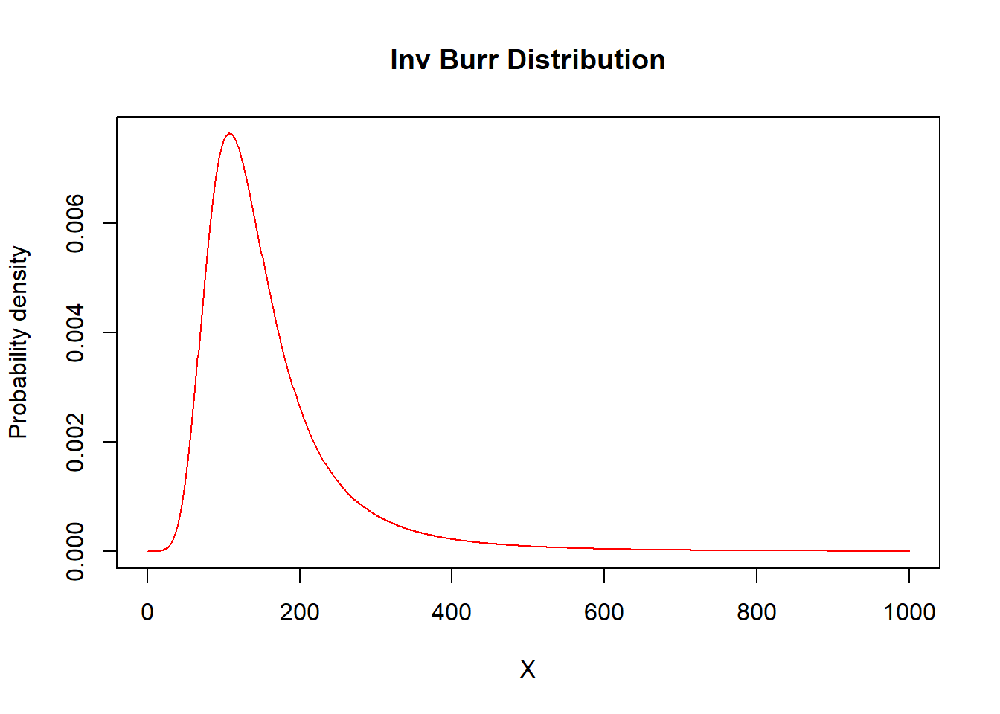
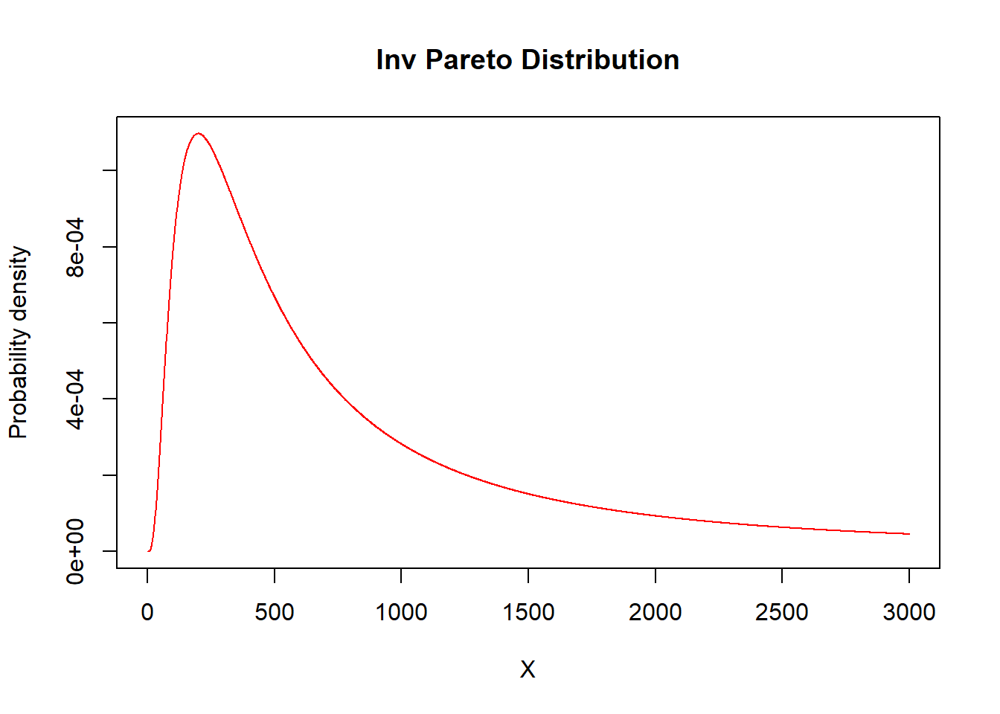
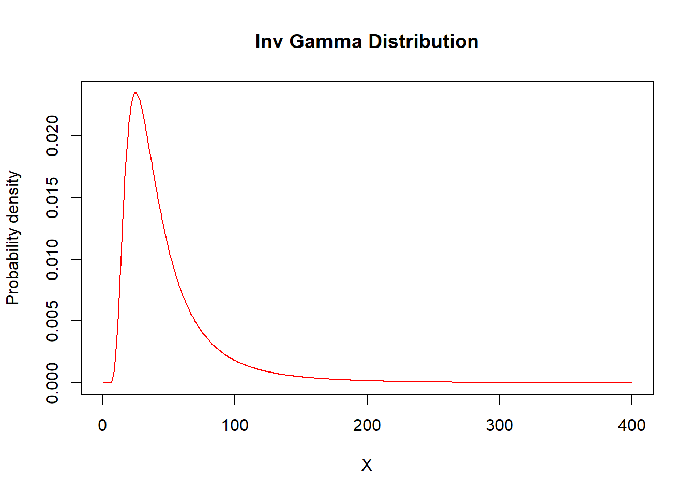
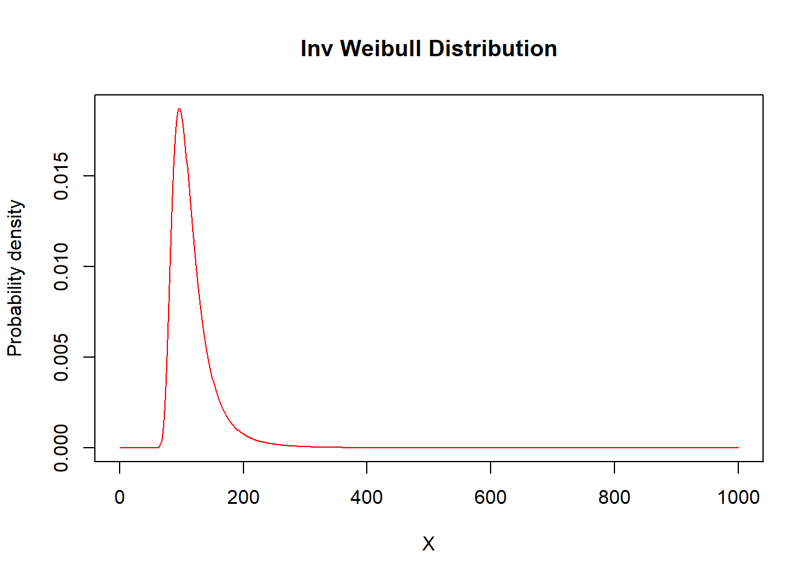
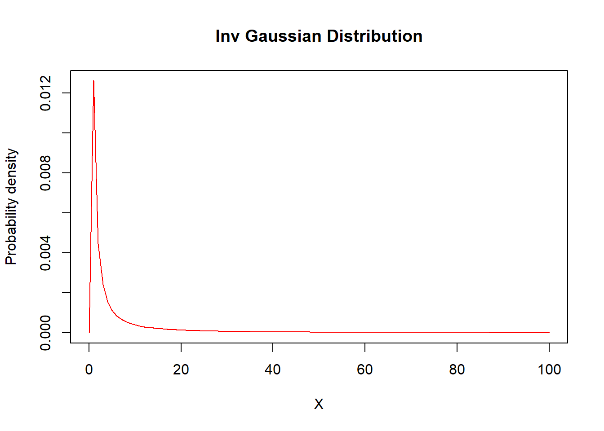

1 Continuous Distributions
Chapter Preview.
This table of distributions is a summary of selected continuous probability distributions used throughout Loss Data Analytics.
1.1 Three Parameter Distributions
GB2
\[ {\small \begin{matrix} \begin{array}{l|c} \hline \text{Name} & \text{Function} \\ \hline \text{Parameter Assumptions} & u=\Big(\frac{x}{x+\theta}\Big) \\ \hline \text{Probability Density Function} & \frac{\Gamma(\alpha+\tau)}{\Gamma(\alpha)\Gamma(\tau)}\frac{\theta^\alpha x^{\tau-1}}{(x+\theta)^{\alpha+\tau}} \\ \text{f(x)} & \\ \hline \text{Cumulative Distribution Function} & \beta(\tau,\alpha;u) \\ \text{F(x)} & \\ \hline \textit{k}^{th}~\text{Raw Moment} & \frac{\theta^k\Gamma(\tau+1)\Gamma(\alpha-k)}{\Gamma(\alpha)\Gamma(\tau)} \\ \mathrm{E}[X^k] & -\tau<k<\alpha \\ \hline \mathrm{E}[(X\wedge x)^k] & \frac{\theta^k\Gamma(\tau+k)\Gamma(\alpha-k)}{\Gamma(\alpha)\Gamma(\tau)}\beta(\tau+k,\alpha-k;u)+x^k[1-\beta(\tau,\alpha,u)] \\ & k>-\tau \\ \hline \end{array} \end{matrix} } \]
alpha=3
tau=5
theta=100
X=seq(from=0,to=1000,by=1)
plot(x=X,y=dgenpareto(X,shape1=alpha,shape2=tau,scale=theta),type="l",ylab="Probability density",col="red",main="GB2 Distribution")
\[ {\small \begin{matrix} \begin{array}{l|c} \hline \text{Density Function} & \text{dgenpareto}(x=, shape1=\alpha, shape2=\tau, scale=\theta) \\ \hline \text{Distribution Function} & \text{pgenpareto}(q=, shape1=\alpha, shape2=\tau, scale=\theta) \\ \hline \text{Quantile Function} & \text{qgenpareto}(p=, shape1=\alpha, shape2=\tau, scale=\theta) \\ \hline \text{Random Sampling Function} & \text{rgenpareto}(r=, shape1=\alpha, shape2=\tau, scale=\theta) \\ \hline \end{array} \end{matrix} } \]Burr
\[ {\small \begin{matrix} \begin{array}{l|c} \hline \text{Name} & \text{Function} \\ \hline \text{Parameter Assumptions} & u=\frac{1}{1+(x/\theta)^\gamma} \\ \hline \text{Probability Density Function} & \frac{\alpha\gamma(x/\theta)^\gamma}{x[1+(x/\theta)^\gamma]^{\alpha+1}} \\ \text{f(x)} & \\ \hline \text{Cumulative Distribution Function} & 1-u^\alpha \\ \text{F(x)} & \\ \hline \textit{k}^{th}~\text{Raw Moment} & \frac{\theta\Gamma(1+(k/\gamma))\Gamma(\alpha-(k/\gamma))}{\Gamma(\alpha)} \\ \mathrm{E}[X^k] & -\gamma<k<\alpha\gamma \\ \hline \mathrm{E}[(X\wedge x)^k] & \frac{\theta\Gamma(1+(k/\gamma))\Gamma(\alpha-(k/\gamma))}{\Gamma(\alpha)}\beta(1+(k/\gamma),\alpha-(k/\gamma);1-u)+x^ku^\alpha \\ & k>-\tau \\ \hline \end{array} \end{matrix} } \]
alpha=2
gamma=3
theta=100
X=seq(from=0,to=1000,by=1)
plot(x=X,y=dburr(X,shape1=alpha,shape2=gamma,scale=theta),type="l",ylab="Probability density",col="red",main="Burr Distribution")
Inv Burr
\[ {\small \begin{matrix} \begin{array}{l|c} \hline \text{Name} & \text{Function} \\ \hline \text{Parameter Assumptions} & u=\frac{(x/\theta)^\gamma}{1+(x/\theta)^\gamma} \\ \hline \text{Probability Density Function} & \frac{\alpha\gamma(x/\theta)^\gamma}{x[1+(x/\theta)^\tau]^{\alpha+1}} \\ \text{f(x)} & \\ \hline \text{Cumulative Distribution Function} & u^\tau \\ \text{F(x)} & \\ \hline \textit{k}^{th}~\text{Raw Moment} & \frac{\theta^k\Gamma(1+(k/\gamma))\Gamma(\alpha-(k/\gamma))}{\tau} \\ \mathrm{E}[X^k] & -\tau\gamma<k<\gamma \\ \hline \mathrm{E}[(X\wedge x)^k] & \frac{\theta^k\Gamma(1+(k/\gamma))\Gamma(\alpha-(k/\gamma))}{\tau}\beta(\tau+(k/\gamma),1-(k/\gamma);u)+x^k[1-u^\tau] \\ & k>-\tau \\ \hline \end{array} \end{matrix} } \]
alpha=2
tau=3
theta=100
X=seq(from=0,to=1000,by=1)
plot(x=X,y=dinvburr(X,shape1=alpha,shape2=tau,scale=theta),type="l",ylab="Probability density",col="red",main="Inv Burr Distribution")
\[ {\small \begin{matrix} \begin{array}{l|c} \hline \text{Density Function} & \text{dinvburr}(x=, shape1=\alpha, shape2=\tau, scale=\theta) \\ \hline \text{Distribution Function} & \text{pinvburr}(p=, shape1=\alpha, shape2=\tau, scale=\theta) \\ \hline \text{Quantile Function} & \text{qinvburr}(q=, shape1=\alpha, shape2=\tau, scale=\theta) \\ \hline \text{Random Sampling Function} & \text{rinvburr}(n=, shape1=\alpha, shape2=\tau, scale=\theta) \\ \hline \end{array} \end{matrix} } \]
1.2 Two Parameter Distributions
Pareto
\[ {\small \begin{matrix} \begin{array}{l|c} \hline \text{Name} & \text{Function} \\ \hline \text{Parameter Assumptions} & \alpha>0 \\ \hline \text{Probability Density Function} & \frac{\alpha\theta^\alpha}{(x+\theta)^{\alpha+1}} \\ \text{f(x)} & \\ \hline \text{Cumulative Distribution Function} & 1-\Big(\frac{\theta}{x+\theta}\Big)^\alpha \\ \text{F(x)} & \\ \hline \textit{k}^{th}~\text{Raw Moment} & \frac{\theta^k\Gamma(k+1)\Gamma(\alpha-k)}{\Gamma(\alpha)} \\ \mathrm{E}[X^k] & -1<\alpha<k \\ \hline \text{Limited Expected Value:}~\alpha\neq1 & \frac{\theta}{\alpha-1}\Big[1-\Big(\frac{\theta}{x+\theta}\Big)^{\alpha-1}\Big] \\ \mathrm{E}[X\wedge x] & \\ \hline \text{Limited Expected Value:}~\alpha=1 & -\theta ln\left(\frac{\theta}{x+\theta}\right) \\ \mathrm{E}[X\wedge x] & \\ \hline \mathrm{E}[(X\wedge x)^k] & \frac{\theta^k\Gamma(k+1)\Gamma(\alpha-k)}{\Gamma(\alpha)}\beta(k+1,\alpha-k;\frac{x}{x+\theta})+x^k(\frac{\theta}{x+\theta})^\alpha \\ \hline \end{array} \end{matrix} } \]
alpha=3
theta=200
X=seq(from=0,to=1000,by=1)
plot(x=X,y=dpareto2(X,shape=alpha,scale=theta),type="l",ylab="Probability density",col="red",main="Pareto Distribution")
\[ {\small \begin{matrix} \begin{array}{l|c} \hline \text{Density Function} & \text{dpareto2}(x=, shape=\alpha, scale=\theta) \\ \hline \text{Distribution Function} & \text{ppareto2}(p=, shape=\alpha,scale=\theta) \\ \hline \text{Quantile Function} & \text{qpareto2}(q=, shape=\alpha,scale=\theta) \\ \hline \text{Random Sampling Function} & \text{rpareto2}(n=, shape=\alpha,scale=\theta) \\ \hline \end{array} \end{matrix} } \]
Inv Pareto
\[ {\small \begin{matrix} \begin{array}{l|c} \hline \text{Name} & \text{Function} \\ \hline \text{Probability Density Function} & \frac{\tau\theta x^{\tau-1}}{(x+\theta)^\tau-1} \\ \text{f(x)} & \\ \hline \text{Cumulative Distribution Function} & \Big(\frac{x}{x+\theta}\Big)^\tau \\ \text{F(x)} & \\ \hline \textit{k}^{th}~\text{Raw Moment} & \frac{\theta^k\Gamma(\tau+k)\Gamma(1-k)}{\Gamma(\tau)} \\ \mathrm{E}[X^k] & -\tau<k<1 \\ \hline \mathrm{E}[(X\wedge x)^k] & \theta^k\tau\int^{x/(x+\theta)}_0~y^{\tau+k-1}(1-y)^{-k}dy+x^k[1-\Big(\frac{x}{x+\theta}\Big)^\tau] \\ & k>-\tau \\ \hline \end{array} \end{matrix} } \]
tau=5
theta=100
X=seq(from=0,to=3000,by=1)
plot(x=X,y=dinvpareto(X,shape=tau,scale=theta),type="l",ylab="Probability density",col="red",main="Inv Pareto Distribution")
\[ {\small \begin{matrix} \begin{array}{l|c} \hline \text{Density Function} & \text{dinvpareto}(x=, shape=\tau, scale=\theta) \\ \hline \text{Distribution Function} & \text{pinvpareto}(p=, shape=\tau,scale=\theta) \\ \hline \text{Quantile Function} & \text{qinvpareto}(q=, shape=\tau,scale=\theta) \\ \hline \text{Random Sampling Function} & \text{rinvpareto}(n=, shape=\tau,scale=\theta) \\ \hline \end{array} \end{matrix} } \]
Loglogistic
\[ {\small \begin{matrix} \begin{array}{l|c} \hline \text{Name} & \text{Function} \\ \hline \text{Parameter Assumptions} & u=\frac{(x/\theta)^\gamma}{1+(x/\theta)^\gamma} \\ \hline \text{Probability Density Function} & \frac{\gamma(x/\theta)^\gamma}{x[1+(x/\theta)^\gamma]^2} \\ \text{f(x)} & \\ \hline \text{Cumulative Distribution Function} & u \\ \text{F(x)} & \\ \hline \textit{k}^{th}~\text{Raw Moment} & \theta^k\Gamma(1+(k/\gamma))\Gamma(1-(k/\gamma)) \\ \mathrm{E}[X^k] & -\gamma<k<\gamma \\ \hline \mathrm{E}[(X\wedge x)^k] & \theta^k\Gamma(1+(k/\gamma))\Gamma(1-(k/\gamma))\beta(1+(k/\gamma),1-(k/\gamma);u)+x^k(1-u) \\ & k>-\gamma \\ \hline \end{array} \end{matrix} } \]
#need to write a f(x) for this distParalogistic
\[ {\small \begin{matrix} \begin{array}{l|c} \hline \text{Name} & \text{Function} \\ \hline \text{Parameter Assumptions} & u=\frac{1}{1+(x/\theta)^\alpha} \\ \hline \text{Probability Density Function} & \frac{\alpha^2(x/\theta)^\alpha}{x[1+(x/\theta)^\alpha]^{\alpha+1}} \\ \text{f(x)} & \\ \hline \text{Cumulative Distribution Function} & 1-u^\alpha \\ \text{F(x)} & \\ \hline \textit{k}^{th}~\text{Raw Moment} & \frac{\theta^k\Gamma(1+(k/\alpha))\Gamma(\alpha-(k/\alpha))}{\Gamma(\alpha)} \\ \mathrm{E}[X^k] & -\alpha<k<\alpha^2 \\ \hline \mathrm{E}[(X\wedge x)^k] & \frac{\theta^k\Gamma(1+(k/\alpha))\Gamma(\alpha-(k/\alpha))}{\Gamma(\alpha)}\beta(1+(k/\alpha),\alpha-(k/\alpha);1-u)+x^\alpha \\ & k>-\alpha \\ \hline \end{array} \end{matrix} } \]
alpha=2
theta=100
X=seq(from=0,to=1000,by=1)
plot(x=X,y=dparalogis(X,shape=alpha,scale=theta),type="l",ylab="Probability density",col="red",main="Paralogistic Distribution")
\[ {\small \begin{matrix} \begin{array}{l|c} \hline \text{Density Function} & \text{dparalogis}(x=, shape=\alpha, scale=\theta) \\ \hline \text{Distribution Function} & \text{pparalogis}(p=, shape=\alpha,scale=\theta) \\ \hline \text{Quantile Function} & \text{qparalogis}(q=, shape=\alpha,scale=\theta) \\ \hline \text{Random Sampling Function} & \text{rparalogis}(n=, shape=\alpha,scale=\theta) \\ \hline \end{array} \end{matrix} } \]
Gamma
\[ {\small \begin{matrix} \begin{array}{l|c} \hline \text{Name} & \text{Function} \\ \hline \text{Parameter Assumptions} & \theta>0,~\alpha>0 \\ \hline \text{Probability Density Function} & \frac{1}{\theta^{\alpha}\Gamma(\alpha)}x^{\alpha-1}e^{-x/\theta} \\ \text{f(x)} & \\ \hline \text{Cumulative Distribution Function} & \Gamma(\alpha;\frac{x}{\theta}) \\ \text{F(x)} & \\ \hline \textit{k}^{th}~\text{Raw Moment} & \theta^k\frac{\Gamma(\alpha+k)}{\Gamma(\alpha)} \\ \mathrm{E}[X^k] & k>-\alpha \\ \hline \text{Limited Expected Value} & \frac{\theta^k\Gamma(k+\alpha)}{\Gamma(\alpha)}\Gamma(k+\alpha; x/\theta)+x^k[1-\Gamma(\alpha; x/\theta)] \\ \mathrm{E}[X\wedge x] & k > -\alpha \\ \hline \end{array} \end{matrix} } \]
alpha=2
theta=50
X=seq(from=0,to=1000,by=1)
plot(x=X,y=dgamma(X,shape=alpha,scale=theta),type="l",ylab="Probability density",col="red",main="Gamma Distribution")
\[ {\small \begin{matrix} \begin{array}{l|c} \hline \text{Density Function} & \text{dgamma}(x=, shape=\alpha, scale=\theta) \\ \hline \text{Distribution Function} & \text{pgamma}(p=, shape=\alpha,scale=\theta) \\ \hline \text{Quantile Function} & \text{qgamma}(q=, shape=\alpha,scale=\theta) \\ \hline \text{Random Sampling Function} & \text{rgamma}(n=, shape=\alpha,scale=\theta) \\ \hline \end{array} \end{matrix} } \]
Inv Gamma
\[ {\small \begin{matrix} \begin{array}{l|c} \hline \text{Name} & \text{Function} \\ \hline \text{Probability Density Function} & \frac{(\theta/x)^\alpha e^{-\theta/x}}{x\Gamma(\alpha)} \\ \text{f(x)} & \\ \hline \text{Cumulative Distribution Function} & 1-\Gamma(\alpha;\theta/x) \\ \text{F(x)} & \\ \hline \textit{k}^{th}~\text{Raw Moment} & \frac{\theta^k\Gamma(\alpha-k)}{\Gamma(\alpha)} \\ \mathrm{E}[X^k] & k<\alpha \\ \hline \mathrm{E}[(X\wedge x)^k] & \frac{\theta^k\Gamma(\alpha-k)}{\Gamma(\alpha)}[1-\Gamma(\alpha-k;\theta/x)]+x^k\Gamma(\alpha;\theta/x) \\ & \\ \hline \end{array} \end{matrix} } \]
alpha=3
theta=100
X=seq(from=0,to=400,by=1)
plot(x=X,y=dinvgamma(X,shape=alpha,scale=theta),type="l",ylab="Probability density",col="red",main="Inv Gamma Distribution")
\[ {\small \begin{matrix} \begin{array}{l|c} \hline \text{Density Function} & \text{dinvgamma}(x=, shape=\alpha, scale=\theta) \\ \hline \text{Distribution Function} & \text{pinvgamma}(p=, shape=\alpha,scale=\theta) \\ \hline \text{Quantile Function} & \text{qinvgamma}(q=, shape=\alpha,scale=\theta) \\ \hline \text{Random Sampling Function} & \text{rinvgamma}(n=, shape=\alpha,scale=\theta) \\ \hline \end{array} \end{matrix} } \]
Weibull
\[ {\small \begin{matrix} \begin{array}{l|c} \hline \text{Name} & \text{Function} \\ \hline \text{Parameter Assumptions} & \\ \hline\ \text{Probability Density Function} & \frac{\tau \Big(\frac{\theta}{x}\Big)^\tau e^-\Big(\frac{\theta}{x}\Big)^\tau}{x} \\ \text{f(x)} & \\ \hline \text{Cumulative Distribution Function} & \exp\Big(-\Big(\frac{\theta}{x}\Big)^\tau\Big) \\ \text{F(x)} & \\ \hline \textit{k}^{th}~\text{Raw Moment} & \theta^k \Gamma(1 + \frac{k}{\tau}) \\ \mathrm{E}[X^k] & k>-\tau \\ \hline \mathrm{E}[(X\wedge x)^k] & \theta^k\Gamma(1+\frac{k}{\tau})\Gamma\Big[1+\frac{k}{\tau};\Big(\frac{x}{\theta}\Big)^\tau\Big]+x^k\exp\Big(-\Big(\frac{x}{\tau}\Big)^\tau\Big) \\ & k>-\tau \\ \hline \end{array} \end{matrix} } \]
tau=2
theta=100
X=seq(from=0,to=1000,by=1)
plot(x=X,y=dweibull(X,shape=tau, scale=theta),type="l",ylab="Probability density",col="red",main="Weibull Distribution")
\[ {\small \begin{matrix} \begin{array}{l|c} \hline \text{Density Function} & \text{dweibull}(x=, shape=\tau, scale=\theta) \\ \hline \text{Distribution Function} & \text{pweibull}(p=, shape=\tau,scale=\theta) \\ \hline \text{Quantile Function} & \text{qweibull}(q=, shape=\tau,scale=\theta) \\ \hline \text{Random Sampling Function} & \text{rweibull}(n=, shape=\tau,scale=\theta) \\ \hline \end{array} \end{matrix} } \]
Inv Weibull
\[ {\small \begin{matrix} \begin{array}{l|c} \hline \text{Name} & \text{Function} \\ \hline \text{Probability Density Function} & \frac{\tau(\theta/x)^\tau e^{-(\theta/x)^\tau}}{x} \\ \text{f(x)} & \\ \hline \text{Cumulative Distribution Function} & e^{-(\theta/x)^\tau} \\ \text{F(x)} & \\ \hline \textit{k}^{th}~\text{Raw Moment} & \theta^k\Gamma(1-(k/\tau)) \\ \mathrm{E}[X^k] & k<\tau \\ \hline \mathrm{E}[(X\wedge x)^k] & \theta^k\Gamma(1-(k/\tau))[1-\Gamma(1(k/\tau);(\theta/x)^\tau)]+x^k[1-e^{-(\theta/x)^\tau}] \\ & \\ \hline \end{array} \end{matrix} } \]
tau=5
theta=100
X=seq(from=0,to=1000,by=1)
plot(x=X,y=dinvweibull(X,shape=tau,scale=theta),type="l",ylab="Probability density",col="red",main="Inv Weibull Distribution")
\[ {\small \begin{matrix} \begin{array}{l|c} \hline \text{Density Function} & \text{dinvweibull}(x=, shape=\tau, scale=\theta) \\ \hline \text{Distribution Function} & \text{pinvweibull}(p=, shape=\tau,scale=\theta) \\ \hline \text{Quantile Function} & \text{qinvweibull}(q=, shape=\tau,scale=\theta) \\ \hline \text{Random Sampling Function} & \text{rinvweibull}(n=, shape=\tau,scale=\theta) \\ \hline \end{array} \end{matrix} } \]
1.3 One Parameter Distributions
Exponential
\[ {\small \begin{matrix} \begin{array}{l|c} \hline \text{Name} & \text{Function} \\ \hline \text{Parameter Assumptions} & \theta>0 \\ \hline \text{Probability Density Function} & \frac{1}{\theta}e^{-x/\theta} \\ \text{f(x)} & \\ \hline \text{Cumulative Distribution Function} & 1-e^{-x/\theta} \\ \text{F(x)} & \\ \hline \textit{k}^{th}~\text{Raw Moment} & \theta^k\Gamma(k+1) \\ \mathrm{E}[X^k] & k>-1 \\ \hline VaR_p(x) & -\theta ln(1-p) \\ \hline \text{Limited Expected Value} & \theta(1-e^{-x/\theta}) \\ \mathrm{E}[X\wedge x] & \\ \hline \end{array} \end{matrix} } \]
theta=100
X=seq(from=0,to=1000,by=1)
plot(x=X,y=dexp(X,rate=1/theta),type="l",ylab="Probability density",col="red",main="Exponential Distribution")
\[ {\small \begin{matrix} \begin{array}{l|c} \hline \text{Density Function} & \text{dexp}(x=, rate=1/\theta) \\ \hline \text{Distribution Function} & \text{pexp}(p=, rate=1/\theta) \\ \hline \text{Quantile Function} & \text{qexp}(q=, rate=1/\theta) \\ \hline \text{Random Sampling Function} & \text{rexp}(n=, rate=1/\theta) \\ \hline \end{array} \end{matrix} } \]
Inv Exponential
\[ {\small \begin{matrix} \begin{array}{l|c} \hline \text{Name} & \text{Function} \\ \hline \text{Probability Density Function} & \frac{\theta e^{-\theta/x}}{x^2} \\ \text{f(x)} & \\ \hline \text{Cumulative Distribution Function} & e^{-\theta/x} \\ \text{F(x)} & \\ \hline \textit{k}^{th}~\text{Raw Moment} & \theta^k\Gamma(k+1) \\ \mathrm{E}[X^k] & k>-1 \\ \hline \mathrm{E}[(X\wedge x)^k] & \theta^k\Gamma(k+1)\Gamma(k+1;x/\theta)+x^k e^{-x/\theta} \\ & k>-1 \\ \hline \end{array} \end{matrix} } \]
theta=100
X=seq(from=0,to=1000,by=1)
plot(x=X,y=dinvexp(X,scale=theta),type="l",ylab="Probability density",col="red",main="Inv Exponential Distribution")\[ {\small \begin{matrix} \begin{array}{l|c} \hline \text{Density Function} & \text{dinvexp}(x=, scale=\theta) \\ \hline \text{Distribution Function} & \text{pinvexp}(p=, scale=\theta) \\ \hline \text{Quantile Function} & \text{qinvexp}(q=, scale=\theta) \\ \hline \text{Random Sampling Function} & \text{rinvexp}(n=, scale=\theta) \\ \hline \end{array} \end{matrix} } \]
1.4 Other distributions
Lognormal
\[ {\small \begin{matrix} \begin{array}{l|c} \hline \text{Name} & \text{Function} \\ \hline \text{Parameter Assumptions} & -\infty <\mu <\infty, \sigma>0 \\ \hline \text{Probability Density Function} & \frac{1}{x\sqrt{2\pi}\sigma} \exp\left( -\frac{(\ln x-\mu)^2}{2\sigma^2}\right) \\ \text{f(x)} & \\ \hline \text{Cumulative Distribution Function} & \Phi\left(\frac{ln(x)-\mu}{\sigma}\right) \\ \text{F(x)} & \\ \hline \textit{k}^{th}~\text{Raw Moment} & \exp(k\mu+\frac{k^2\sigma^2}{2}) \\ \mathrm{E}[X^k] & k>-a \\ \hline \text{Limited Expected Value} & \exp\Big(k\mu+\frac{k^2\sigma^2}{2}\Big)\Phi\Big(\frac{ln(x)-\mu-k\sigma^2}{\sigma}\Big)+x^k\Big[1-\Phi\Big(\frac{ln(x)-\mu}{\sigma}\Big)\Big] \\ \mathrm{E}[X\wedge x] & \\ \hline \end{array} \end{matrix} } \]
mu=20
sigma=12
X=seq(from=0,to=1000,by=1)
plot(x=X,y=dlognorm(X,mu=mu,sigma=sigma),type="l",col="red")
Inv Gaussian
\[ {\small \begin{matrix} \begin{array}{l|c} \hline \text{Name} & \text{Function} \\ \hline \text{Parameter Assumptions} & z=\frac{x-\mu}{\mu}~,~y=\frac{x+\mu}{\mu} \\ \hline \text{Probability Density Function} & \Big(\frac{\theta}{2\pi x^3}\Big)^{1/2}\exp\Big(\frac{\theta z^2}{2x}\Big) \\ \text{f(x)} & \\ \hline \text{Cumulative Distribution Function} & \Phi\Big[z\Big(\frac{\theta}{x}\Big)^{1/2}\Big]+\exp\Big(\frac{2\theta}{\mu}\Big)\Phi\Big[-y\Big(\frac{\theta}{x}\Big)^{1/2}\Big] \\ \text{F(x)} & \\ \hline \text{Mean} & \mu \\ \mathrm{E}[X] & \\ \hline \mathrm{Var[X]} & \frac{\mu^3}{\theta}\\ \hline \mathrm{E}[(X\wedge x)^k] & x-\mu x\Phi\Big[z\Big(\frac{\theta}{x}\Big)^{1/2}\Big]-(\mu y)\exp\Big(\frac{2\theta}{\mu}\Big)\Phi\Big[-y\Big(\frac{\theta}{x}\Big)^{1/2}\Big] \\ & \\ \hline \end{array} \end{matrix} } \]
mu=100
theta=1000
X=seq(from=0,to=100,by=1)
plot(x=X,y=dinvgauss(X,mean=mu,dispersion=theta),type="l",ylab="Probability density",col="red",main="Inv Gaussian Distribution")
\[ {\small \begin{matrix} \begin{array}{l|c} \hline \text{Density Function} & \text{dinvgauss}(x=, mean=\mu,dispersion=\theta) \\ \hline \text{Distribution Function} & \text{pinvgauss}(p=, mean=\mu,dispersion=\theta) \\ \hline \text{Quantile Function} & \text{qinvgauss}(q=, mean=\mu,dispersion=\theta) \\ \hline \text{Random Sampling Function} & \text{rinvgauss}(n=, mean=\mu,dispersion=\theta) \\ \hline \end{array} \end{matrix} } \]
Single Parameter Pareto
\[ {\small \begin{matrix} \begin{array}{l|c} \hline \text{Name} & \text{Function} \\ \hline \text{Parameter Assumptions} & \theta~\text{is known.}~,~x>\theta \\ \hline \text{Probability Density Function} & \frac{\alpha\theta^\alpha}{x^{\alpha+1}} \\ \text{f(x)} & \\ \hline \text{Cumulative Distribution Function} & 1-(\theta/x)^\alpha \\ \text{F(x)} & \\ \hline \textit{k}^{th}~\text{Raw Moment} & \frac{\alpha\theta^k}{\alpha-k} \\ \mathrm{E}[X^k] & \\ \hline \mathrm{E}[(X\wedge x)^k] & \frac{\alpha\theta^k}{\alpha-k}-\frac{k\theta^k}{(\alpha-k)x^{\alpha-k}} \\ & x \geq\theta \\ \hline \end{array} \end{matrix} } \]
alpha=3
theta=100
X=seq(from=0,to=1000,by=1)
plot(x=X,y=dpareto1(X,shape=alpha,min=theta),type="l",ylab="Probability density",col="red",main="Single Parameter Pareto Distribution")\[ {\small \begin{matrix} \begin{array}{l|c} \hline \text{Density Function} & \text{dpareto1}(x=, shape=\alpha,min=\theta) \\ \hline \text{Distribution Function} & \text{ppareto1}(p=, shape=\alpha,min=\theta) \\ \hline \text{Quantile Function} & \text{qpareto1}(q=, shape=\alpha,min=\theta) \\ \hline \text{Random Sampling Function} & \text{rpareto1}(n=, shape=\alpha,min=\theta) \\ \hline \end{array} \end{matrix} } \]
1.5 Distributions with Finite Support
Generalized Beta
\[ {\small \begin{matrix} \begin{array}{l|c} \hline \text{Name} & \text{Function} \\ \hline \text{Parameter Assumptions} & 0<x<\theta~,~u=(x/\theta)^\tau \\ \hline \text{Probability Density Function} & \frac{\Gamma(a+b)}{\Gamma(a)\Gamma(b)}u^\alpha(1-u)^{b-1}\frac{\tau}{x} \\ \text{f(x)} & \\ \hline \text{Cumulative Distribution Function} & \beta(a,b;u) \\ \text{F(x)} & \\ \hline \textit{k}^{th}~\text{Raw Moment} & \frac{\theta^k\Gamma(a+b)\Gamma(a+(k/\tau))}{\Gamma(a)\Gamma(a+b+(k/\tau))} \\ \mathrm{E}[X^k] & k>-\alpha\tau \\ \hline \mathrm{E}[(X\wedge x)^k] & \frac{\theta^k\Gamma(a+b)\Gamma(a+(k/\tau))}{\Gamma(a)\Gamma(a+b+(k/\tau))}\beta(a+(k/\tau),b;u)+x^k[1-\beta(a,b;u)] \\ \hline \end{array} \end{matrix} } \]
a=3
b=5
tau=2
theta=1000
X=seq(from=0,to=1000,by=1)
plot(x=X,y=dgenbeta(X,shape1=a,shape2=b,shape3=tau,scale=theta),type="l",ylab="Probability density",col="red",main="Generalized Beta Distribution")
\[ {\small \begin{matrix} \begin{array}{l|c} \hline \text{Density Function} & \text{dgenbeta}(x=, shape1=a,shape2=b,shape3=\tau,scale=\theta) \\ \hline \text{Distribution Function} & \text{pgenbeta}(p=, shape1=a,shape2=b,shape3=\tau,scale=\theta) \\ \hline \text{Quantile Function} & \text{qgenbeta}(q=, shape1=a,shape2=b,shape3=\tau,scale=\theta) \\ \hline \text{Random Sampling Function} & \text{rgenbeta}(n=, shape1=a,shape2=b,shape3=\tau,scale=\theta) \\ \hline \end{array} \end{matrix} } \]
Beta
\[ {\small \begin{matrix} \begin{array}{l|c} \hline \text{Name} & \text{Function} \\ \hline \text{Parameter Assumptions} & u=\frac{x}{\theta},~a>0,~b>0,~0<x<\theta \\ \hline \text{Probability Density Function} & \frac{\Gamma(a+b)}{\Gamma(a)\Gamma(b)} u^a(1-u)^{b-1}\frac{1}{x} \\ \text{f(x)} & \\ \hline \text{Cumulative Distribution Function} & \beta(a,b;u) \\ \text{F(x)} & \\ \hline \textit{k}^{th}~\text{Raw Moment} & \frac{\theta^k \Gamma(a+b)\Gamma(a+k)}{\Gamma(a)\Gamma(a+b+1)} \\ \mathrm{E}[X^k] & k>-a \\ \hline \text{Limited Expected Value} & \frac{\theta^k a(a+1)\cdots(a+k-1)}{(a+b)(a+b+1)\cdots(a+b+k-1)}\beta(a+k,b;u)+x^k[1-\beta(a,b;u)] \\ \mathrm{E}[X\wedge x] & k > -\alpha \\ \hline \end{array} \end{matrix} } \]
a=2
b=4
theta=1
X=seq(from=0,to=1,by=.0001)
plot(x=X,y=dbeta(X,shape1=a,shape2=b,ncp=theta),type="l",ylab="Probability density",col="red",main="Beta Distribution")
\[ {\small \begin{matrix} \begin{array}{l|c} \hline \text{Density Function} & \text{dbeta}(x=, shape1=a,shape2=b,ncp=\theta) \\ \hline \text{Distribution Function} & \text{pbeta}(p=, shape1=a,shape2=b,ncp=\theta) \\ \hline \text{Quantile Function} & \text{qbeta}(q=, shape1=a,shape2=b,ncp=\theta) \\ \hline \text{Random Sampling Function} & \text{rbeta}(n=, shape1=a,shape2=b,ncp=\theta) \\ \hline \end{array} \end{matrix} } \]
1.6 Limited Expected Values
Functions
\[ {\small \begin{matrix} \begin{array}{l|c} \hline \text{Distribuion} & \text{Function} \\ \hline \text{GB2} & \frac{\theta\Gamma(\tau+1)\Gamma(\alpha-1)}{\Gamma(\alpha)\Gamma(\tau)}\beta(\tau+1,\alpha-1;\frac{x}{x+\beta})+x[1-\beta(\tau,\alpha;\frac{x}{x+\beta})] \\ \hline \text{Burr} & \frac{\theta\Gamma(1+\frac{1}{\tau})\Gamma(\alpha-\frac{1}{\gamma})}{\Gamma(\alpha)}\beta(1+\frac{1}{\gamma},\alpha-\frac{1}{\gamma};1-\frac{1}{1+(x/\theta)^\gamma})+x\Big(\frac{1}{1+(x/\theta)^\gamma}\Big)^\alpha \\ \hline \text{Inverse Burr} & \frac{\theta\Gamma(1+(1/\gamma))\Gamma(1-(1/\gamma))}{\Gamma(\gamma)}\beta(\tau+\frac{1}{\gamma},1-\frac{1}{\gamma};\frac{(x/\theta)^\gamma}{1+(x/\theta)^\gamma})+x[1-\Big(\frac{(x/\theta)^\gamma}{1+(x/\theta)^\gamma}\Big)^\tau] \\ \hline \text{Pareto} & \\ \alpha=1 & -\theta ln\Big(\frac{\theta}{x+\theta}\Big) \\ \alpha\neq1 & \frac{\theta}{\alpha-1}[1-\Big(\frac{\theta}{x+\theta}\Big)^{\alpha-1}] \\ \hline \text{Inverse Pareto} & \theta\tau\int^{x/(x+\theta)}_0~y^\tau(1-y)^{-1}dy+x[1-\Big(\frac{x}{x+\theta}\Big)^\tau] \\ \hline \text{Logistic} & \theta\Gamma_1(1+\frac{1}{\gamma})\Gamma(1-\frac{1}{\gamma})\beta(1+\frac{1}{\gamma},1-\frac{1}{\gamma};\frac{(x/\theta)^\gamma}{1+(x/\theta)^\gamma})+x(1-\frac{(x/\theta)^\gamma}{1+(x/\theta)^\gamma}) \\ \hline \text{Paralogistic} & \frac{\theta\Gamma(1+\frac{1}{\alpha})\Gamma(\alpha-\frac{1}{\alpha})}{\Gamma(\alpha)}\beta(1+\frac{1}{\alpha},\alpha-\frac{1}{\alpha};1-\frac{1}{1+(x/\theta)^\alpha})+x\Big(\frac{1}{1+(x/\theta)^\alpha}\Big)^\alpha \\ \hline \text{Inverse Paralogistic} & \frac{\theta\Gamma(\tau+\frac{1}{\tau})\Gamma(1-\frac{1}{\tau})}{\Gamma(\tau)}\beta(\tau+\frac{1}{\tau},1-\frac{1}{\tau};\frac{(x/\theta)^\tau}{1+(x/\theta)^\tau})+x[1-\Big(\frac{(x/\theta)^\tau}{1+(x/\theta)^\tau}\Big)^\tau] \\ \hline \text{Gamma} & \frac{\theta\Gamma(\alpha+1)}{\Gamma(\alpha)}\Gamma(\alpha+k;\frac{x}{\theta})+x[1-\Gamma(\alpha,\frac{x}{\theta})] \\ \hline \text{Inverse Gamma} & \frac{\theta\Gamma(\alpha-1)}{\Gamma(\alpha)}[1-\Gamma(\alpha-1;\frac{\theta}{x})]+x\Gamma(\alpha,\frac{\theta}{x}) \\ \hline \text{Weibull} & \theta\Gamma(1+\frac{1}{\tau})\Gamma(1+\frac{1}{\tau},\Big(\frac{x}{\theta}\Big)^\tau)+x*\exp(-(x/\theta)^\tau) \\ \hline \text{Inverse Weibull} & \theta\Gamma(1-\frac{1}{\tau})[1-\Gamma(1-\frac{1}{\tau};\Big(\frac{\theta}{x}\Big)^\tau)]+x[1-\exp(-(\theta/x)^\tau)] \\ \hline \text{Exponential} & \theta(1-\exp(-(x/\theta))) \\ \hline \text{Inverse Exponential} & \theta G(0;\frac{\theta}{x})+x(1-\exp(-(\theta/x))) \\ \hline \text{Lognormal} & \exp(\mu+\sigma^2/2)\Phi\Big(\frac{ln(x)-\mu-\sigma^2}{\sigma}\Big)+x[1-\Phi\Big(\frac{ln(x)-\mu}{\sigma}\Big)] \\ \hline \text{Inverse Gaussian} & x-\mu\Big(\frac{x-\mu}{\mu}\Big)\Phi\Big[\Big(\frac{x-\mu}{\mu}\Big)\Big(\frac{\theta}{x}\Big)^{1/2}\Big]-\mu\Big(\frac{x+\mu}{\mu}\Big)\exp\Big(\frac{2\theta}{\mu}\Big)\Phi\Big[-\Big(\frac{x+\mu}{\mu}\Big)\Big(\frac{\theta}{x}\Big)^{1/2}\Big] \\ \hline \text{Single-Parameter Pareto} & \frac{\alpha\theta}{\alpha-1}-\frac{\theta^\alpha}{(\alpha-1)x^{\alpha-1}} \\ \hline \text{Generalized Beta} & \frac{\theta\Gamma(a+b)\Gamma(a+\frac{1}{\tau})}{\Gamma(a)\Gamma(a+b+\frac{1}{\tau})}\beta(a+\frac{1}{\tau},b;\Big(\frac{x}{\theta}\Big)^\tau)+x\Big[1-\beta(a,b;\Big(\frac{x}{\theta}\Big)^\tau)\Big] \\ \hline \text{Beta} & \frac{\theta a}{(a+b)}\beta(a+1,b;\frac{x}{\theta})+x[1-\beta(a,b;\frac{x}{\theta})] \\ \hline \end{array} \end{matrix} } \]
Graphs
\[ {\small \begin{matrix} \begin{array}{l|c|c} \hline \text{Distribution} & \text{Parameters} & \mathrm{E}[x] & E[X\wedge100] & E[X\wedge250] & E[X\wedge500] &E[X\wedge1000] \\ \hline \text{Pareto} & \alpha=3, \theta=200 & 100 & 55.55 &80.25 & 91.84 & 97.22 \\ \hline \text{Exponential} & \theta=100 & 100 & 63.21 & 91.79 & 99.33 & 99.99 \\ \hline \text{Gamma} & \alpha=2, \theta=50 & 100 & 72.93 & 97.64 & 99.97 & 100 \\ \hline \text{Weibull} & \tau=2, \theta=\frac{200}{\sqrt[]{\pi}} & 100 & 78.99 & 99.82 & 100 & 100 \\ \hline \text{GB2} & \alpha=3,\tau=2,\theta=100 & 100 & 62.50 & 86.00 & 94.91 & 98.42 \\ \hline \end{array} \end{matrix} } \]
